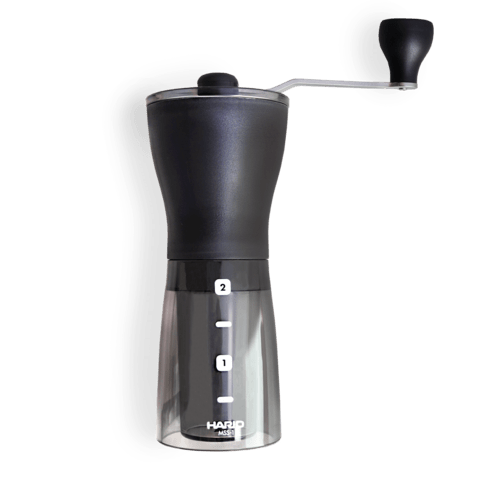
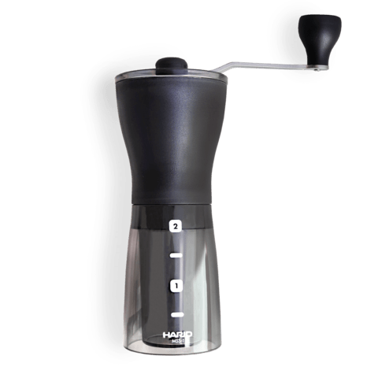

Aeropress
Co je to Aeropress?
Aeropress je poměrně novodobý způsob, kterým si můžeme kávu připravit. Provedení je elegantní, jedná se pouze o dva „plastové“ válce a děrované víčko. První válec slouží jako nádoba, druhý válec s gumovým koncem jako píst. Stačí už jen našroubovat víčko s filtračním papírem a je to.
Díky této jednoduché a odolné konstrukci se stal Aeropress tak populárním. Je ideální na cestovaní, kvůli své velikosti a nerozbytnosti. Jedná se o imerzní metodu, tedy káva je s vodou delší dobu v kontaktu, můžeme říci, že se louhuje.
Výsledný nápoj není zcela průzračný a má silnější tělo než třeba V60, troufnu si říci, že chuťový profil není tak vyvážený jako z dripperu, ale díky silnějšímu tělu je chuť často intenzivnější.
Příprava
Příprava spočívá v zalití kávy vodou, kde se nechá nějaký čas extrahovat a pak následné protlačení extrahované kávy skrze filtrační papír pomocí tlaku vzduchu vyvinutým tlačením na píst. Píst dokáže vyvinout tlak 0,7 barů, pro srovnání profesionální kávovar dokáže vyvinout tlak 9 barů.
Recept
Budeme potřebovat Aeropress, mlýnek na kávu nebo již umletou kávu a libovolnou konvici na vodu.
-
Ohřejeme vodu 93-97°C
Na 250ml použijeme 15g kávy. Použijeme tedy poměr 1:17.
-
Umeleme kávu
Hrubost kávy by měla být asi jako cukr krystal. Tedy středně hrubé až hrubší mletí.
-
Filtrační papír
Vložíme filtrační papír do víčka a našroubujeme ho na Aeropress. Propláchneme Aeropress horkou vodou.
-
První fáze extrakce
Aeropress položíme na šálek a nasypeme do něj kávu. Zalijeme ji vodou a počkáme 20s a kávu promícháme.
-
Druhá fáze extrakce
Na Aeropress nasadíme píst a plynulým pohybem ho stlačujeme kolmo k desce stolu. Výsledný čas by se měl pohybovat kolem 2-3 minut.
Tip #1:
Pro lepší kontrolu nad extrakcí můžeme využít takzvanou inverzní metodu, kdy je píst zasunut do tubusu a celý Aeropress je otočen o 180°, tedy stojí na pístu, nyní můžeme vsypat kávu a zalít vodou. Pokud chceme kávu přefiltrovat, na Aeropress jen našroubujeme víko s filtrem, otočíme a je to.
Tip #2:
Dle vynálezce Aeropressu není nutné filtry promývat, můžeme si tedy ušetřit pár sekund v přípravě.
Info #1: Vynálezce
Aeropress byl vynalezen roku 2005 instruktorem inženýrství ze stanfordské univerzity Alanem Adlerem.
Nástroje
 
